Laporan Praktikum Aplikasi Mobile: Input Widgets dan Basic Form
1. Pendahuluan
Praktikum pertama Aplikasi Mobile ini membahas mengenai pembuatan basic form pada Flutter yang berfungsi untuk menerima inputan dari pengguna melalui keyboard. Basic form merupakan kumpulan widget input seperti TextField, TextFormField, CheckBox, Switch, Dropdown, dan sejenisnya yang digunakan untuk mengelola serta memvalidasi data masukan sebelum data tersebut diproses lebih lanjut oleh aplikasi. Melalui praktikum ini, mahasiswa diperkenalkan pada dua widget utama, yaitu TextField yang bersifat sederhana tanpa validasi otomatis, dan TextFormField yang sudah terintegrasi dengan logika validasi serta manajemen status form menggunakan GlobalKey dan FormState.
Tujuan Praktikum:
- Mahasiswa mampu membuat beberapa jenis input widgets pada aplikasi Flutter.
- Mahasiswa mampu membuat dan mengontrol inputan yang diberikan oleh pengguna.
- Mahasiswa memahami perbedaan penggunaan TextField dan TextFormField.
- Mahasiswa mampu menerapkan validasi data menggunakan GlobalKey dan FormState.
2. Langkah kerja
A. Membuat Tampilan Basic Form dengan TextField
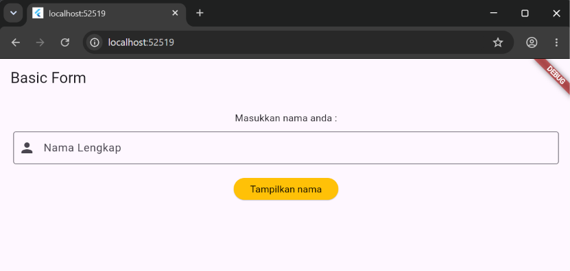
Kode Program: Tampilan Awal Basic Form TextFieldPada tahap ini dibuat file dart baru bernama form-textfield di dalam folder lib. Struktur halaman disusun menggunakan Scaffold dengan AppBar berjudul "Basic Form". Bagian isi halaman dibungkus dengan Padding dan Column agar susunan widget rapi dan sejajar ke kiri, terdiri dari widget Text sebagai label, widget TextField sebagai kolom inputan nama lengkap, serta ElevatedButton yang akan berfungsi sebagai pemicu aksi.
Hasil di atas menunjukkan tampilan form yang telah dijalankan pada browser/emulator, berupa kolom inputan nama lengkap beserta tombol "Tampilkan mama" yang belum memiliki fungsi apa pun karena onPressed masih dibiarkan kosong.
B. Menambahkan TextEditingController
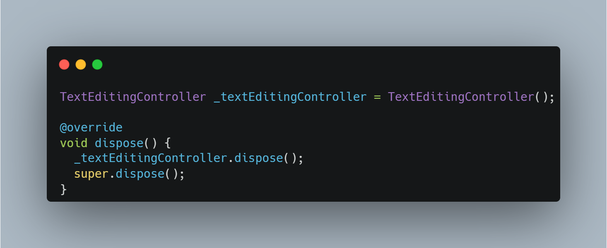
Kode Program: Penambahan TextEditingControllerPada class _MyFormState ditambahkan sebuah variabel bertipe TextEditingController yang bertugas mengambil serta mengelola nilai inputan dari pengguna. Bersamaan dengan itu, method dispose() dioverride untuk membersihkan controller tersebut dari memori ketika widget sudah tidak digunakan lagi, sehingga aplikasi terhindar dari kebocoran memori (memory leak).
C. Menghubungkan Controller pada Widget TextField
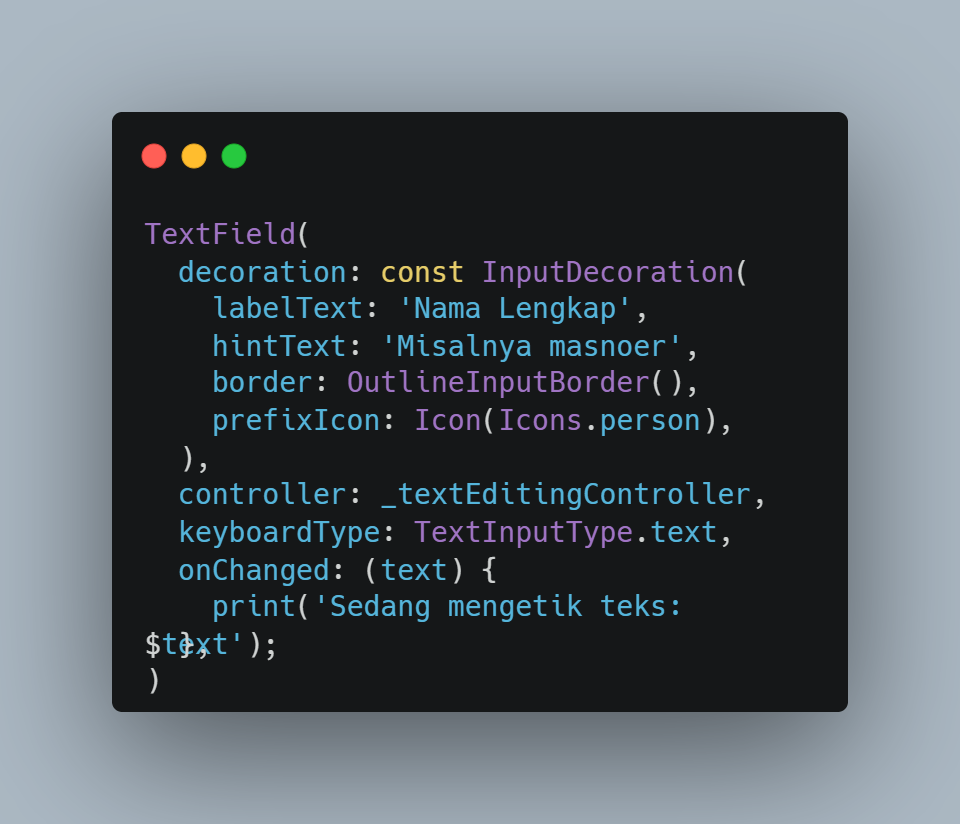
Kode Program: Properti TextField dengan ControllerWidget TextField yang sebelumnya dibuat dilengkapi dengan tiga properti tambahan, yaitu controller yang dihubungkan dengan _textEditingController, keyboardType untuk menentukan jenis papan ketik yang muncul, dan onChanged yang berfungsi sebagai event listener untuk mencetak teks yang sedang diketik pengguna secara langsung ke console setiap kali terjadi perubahan karakter.
D. Menampilkan Inputan Menggunakan SnackBar
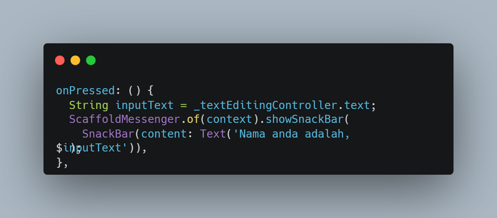
Kode Program: Implementasi SnackBar pada onPressedMethod onPressed pada ElevatedButton diisi dengan kode yang mengambil nilai teks dari _textEditingController, kemudian nilai tersebut ditampilkan kepada pengguna melalui widget SnackBar, yaitu notifikasi singkat yang muncul pada bagian bawah layar aplikasi.
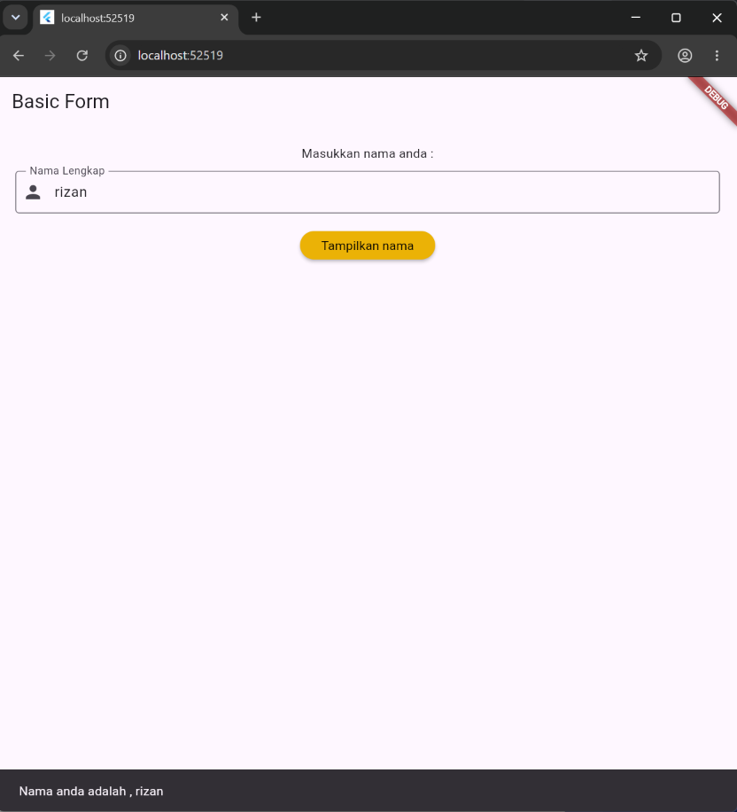
Hasil Akhir Basic Form TextField Setelah DijalankanHasil pengujian menunjukkan bahwa setelah nama lengkap diketikkan dan tombol ditekan, SnackBar muncul di bagian bawah layar menampilkan teks nama yang telah diinputkan sebelumnya, membuktikan bahwa controller berhasil mengambil nilai dari TextField dengan benar.
E. Membuat Basic Form dengan TextFormField
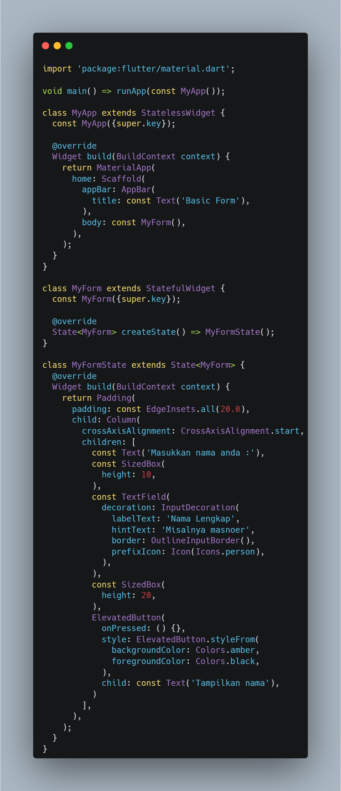
Kode Program: Tampilan Awal Basic Form TextFormFieldDibuat file dart baru bernama form-textformfield yang berisi tampilan form dengan dua buah widget TextFormField untuk kolom nama dan email, serta satu ElevatedButton bertuliskan "Submit" yang dibungkus SizedBox agar lebar tombol memenuhi layar. Berbeda dari TextField, TextFormField dirancang agar dapat bekerja sama dengan widget Form untuk keperluan validasi data.
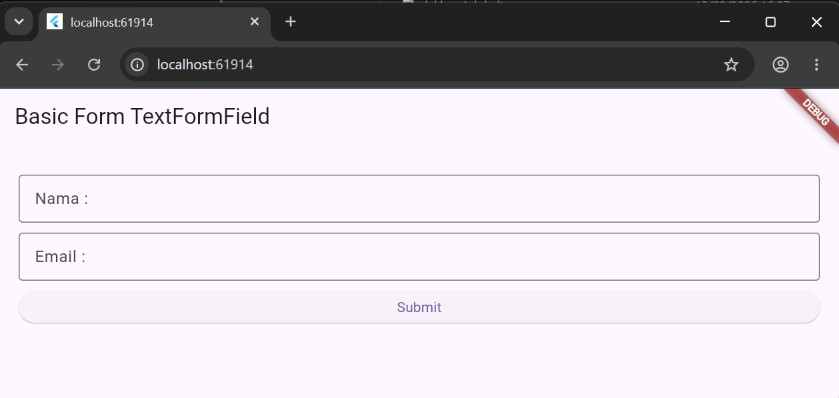
Hasil Tampilan Awal Basic Form TextFormFieldTampilan awal ini masih menunjukkan dua kolom input yang belum tersambung dengan controller maupun validator, sehingga tombol Submit belum dapat memicu proses apa pun.
F. Menambahkan GlobalKey dan Controller
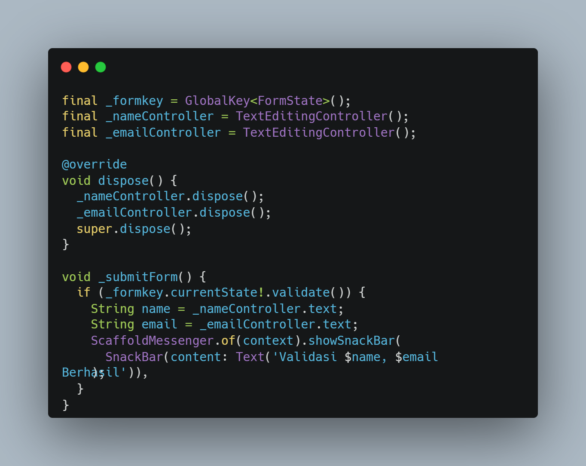
Kode Program: GlobalKey, Controller, dan Method _submitFormPada class _MyFormTextState ditambahkan variabel _formKey bertipe GlobalKey<FormState> untuk mengakses status Form secara global, beserta dua buah TextEditingController untuk menampung inputan nama dan email. Dibuat pula method _submitForm() yang memanggil _formKey.currentState!.validate() untuk menjalankan seluruh fungsi validator pada setiap TextFormField; apabila seluruh validasi bernilai true, nilai nama dan email akan ditampilkan melalui SnackBar.
G. Membungkus Tampilan dengan Widget Form dan Menambahkan Validator
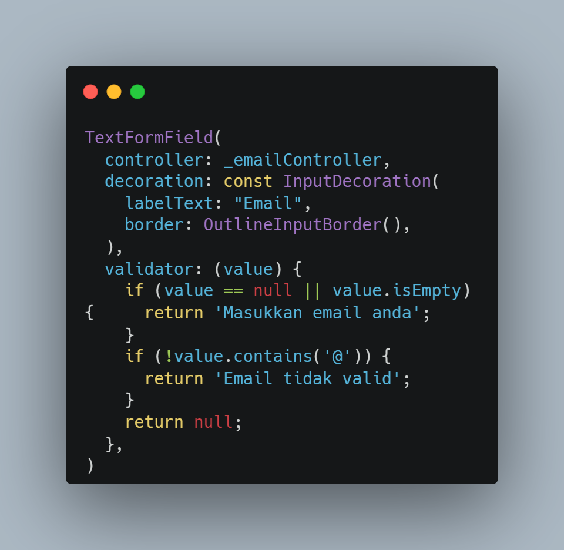
Kode Program: Widget Form dan Validator pada TextFormFieldTampilan Column dibungkus menggunakan widget Form dan diberi properti key: _formKey agar terhubung dengan GlobalKey yang telah dibuat. Setiap TextFormField dilengkapi controller masing-masing beserta fungsi validator: kolom nama akan menampilkan pesan error apabila dikosongkan, sedangkan kolom email memvalidasi dua kondisi sekaligus, yaitu memastikan email tidak kosong dan memastikan formatnya mengandung karakter "@".
H. Menghubungkan Method _submitForm ke ElevatedButton
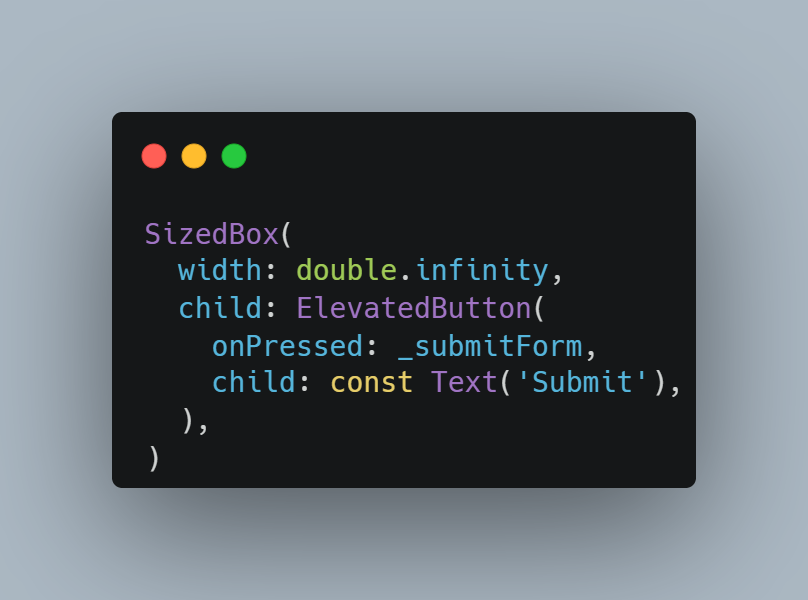
Kode Program: Penghubungan _submitForm pada ElevatedButtonMethod _submitForm dikaitkan dengan properti onPressed pada ElevatedButton yang dibungkus SizedBox agar lebar tombol memenuhi layar. Dengan demikian, setiap kali tombol Submit ditekan, proses validasi pada seluruh TextFormField akan dijalankan terlebih dahulu sebelum data ditampilkan.
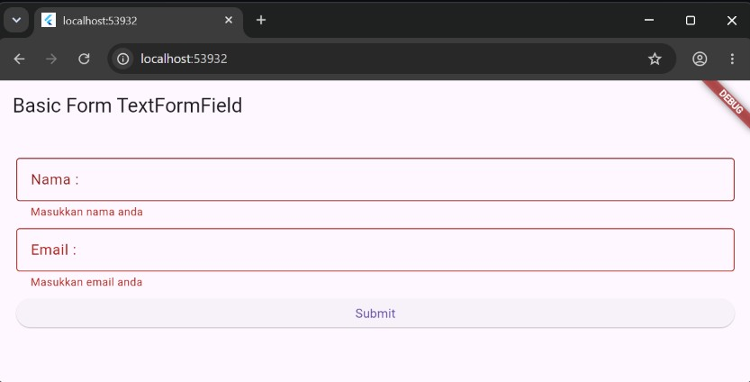
Hasil Akhir Basic Form TextFormField Beserta ValidasinyaHasil pengujian menunjukkan bahwa saat kolom nama atau email dikosongkan atau format email tidak valid, pesan error otomatis muncul di bawah field yang bersangkutan. Ketika seluruh data valid dan tombol Submit ditekan, SnackBar muncul menampilkan nama dan email yang berhasil divalidasi.
3. Tugas/Latihan (Kelas B)
Implementasi Form Pendaftaran Pengguna
Sesuai instruksi latihan Kelas B, dibuat aplikasi form pendaftaran pengguna yang terdiri dari empat kolom inputan yaitu nama, email, password, dan confirm password, beserta satu tombol submit. Implementasi dipecah menjadi dua file dart, yaitu main.dart sebagai root aplikasi dan user_registration_form.dart yang berisi logika form.
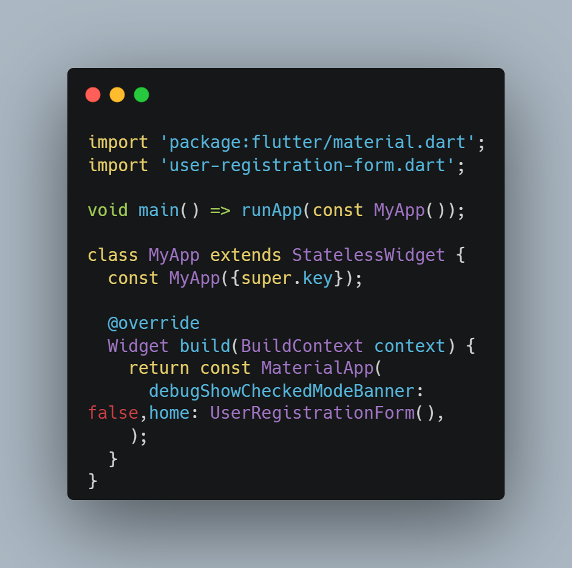
Kode Program: main.dartFile main.dart menggunakan MaterialApp sebagai root aplikasi dengan properti home diarahkan langsung ke widget UserRegistrationForm yang bertipe StatefulWidget.
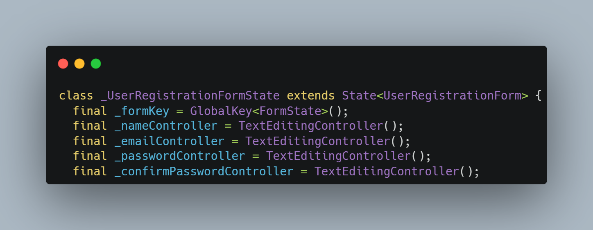
Kode Program: Deklarasi GlobalKey dan Controller pada user_registration_form.dartPada class _UserRegistrationFormState dideklarasikan sebuah _formKey bertipe GlobalKey<FormState> beserta empat TextEditingController untuk menampung nilai nama, email, password, dan confirm password. Seluruh controller tersebut dibersihkan pada method dispose() agar tidak membebani memori aplikasi.
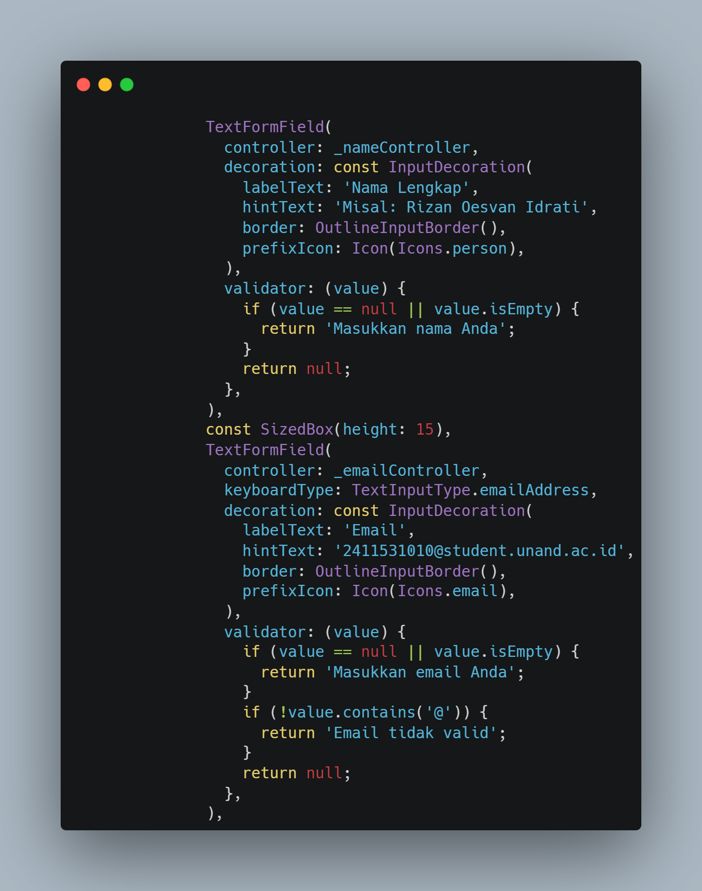
Kode Program: Validator pada Kolom Nama dan EmailKolom nama divalidasi agar tidak boleh dikosongkan, sedangkan kolom email divalidasi dengan dua ketentuan, yaitu tidak boleh kosong dan wajib mengandung karakter "@" agar dianggap sebagai format email yang benar.
Kolom password divalidasi agar tidak kosong dan memiliki panjang minimal enam karakter. Kolom confirm password divalidasi dengan membandingkan nilainya terhadap nilai pada controller password menggunakan operator perbandingan string, sehingga apabila kedua nilai tersebut berbeda, pesan error "Password tidak sama" akan ditampilkan.
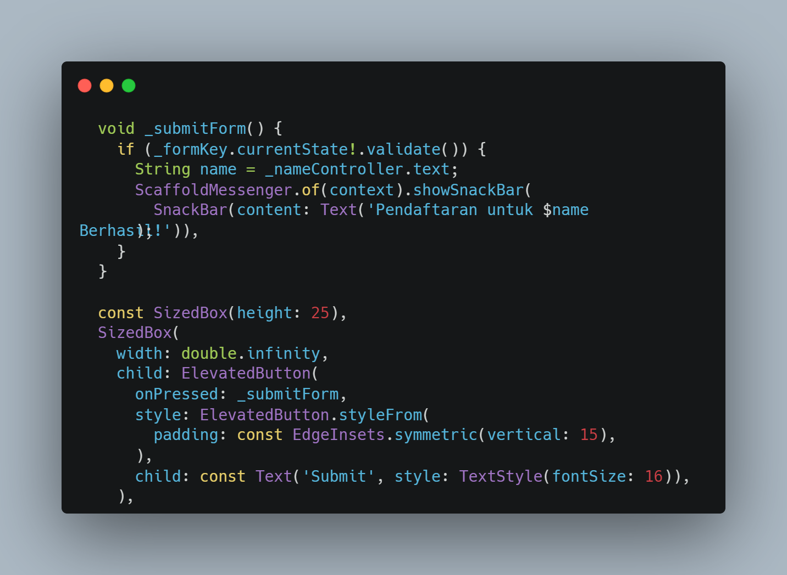
Kode Program: Method _submitForm dan Pemasangannya pada Tombol SubmitMethod _submitForm memanggil _formKey.currentState!.validate() untuk menjalankan seluruh validator secara serentak. Apabila hasilnya bernilai true, aplikasi akan menampilkan SnackBar bertuliskan "Pendaftaran Berhasil" sebagai tanda bahwa seluruh data yang diinputkan telah lolos validasi.
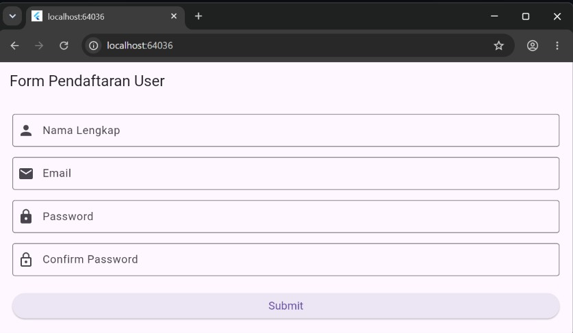
Hasil Tampilan Awal Form Pendaftaran PenggunaTampilan awal menunjukkan keempat kolom inputan tersusun rapi secara vertikal beserta tombol Submit di bagian bawah yang lebarnya memenuhi layar.
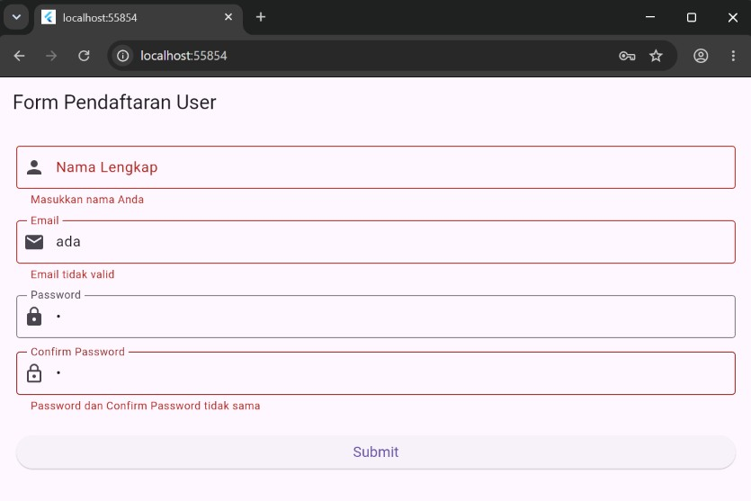
Hasil Pengujian Validasi Saat Kolom Kosong atau Format SalahKetika tombol Submit ditekan pada kondisi terdapat kolom yang masih kosong, format email salah, atau password dan confirm password tidak sama, pesan error yang sesuai langsung muncul di bawah masing-masing field yang bermasalah.
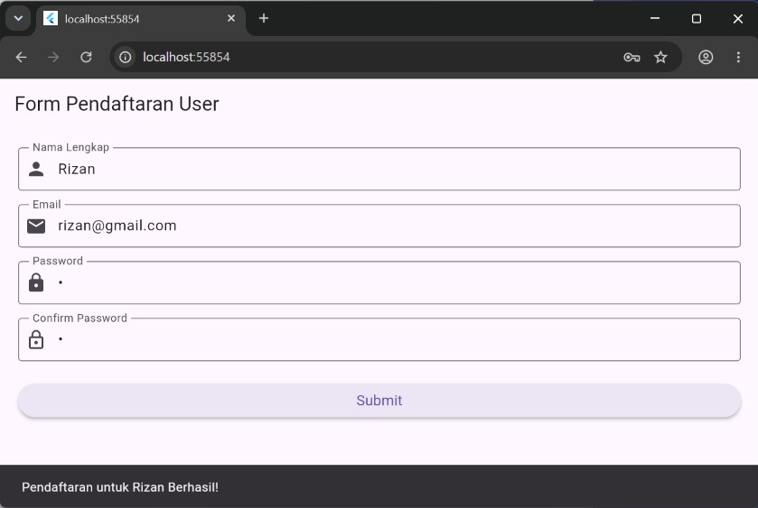
Hasil Notifikasi Pendaftaran BerhasilSetelah seluruh data diisi dengan benar dan tombol Submit ditekan, SnackBar "Pendaftaran Berhasil" muncul di bagian bawah layar, menandakan bahwa seluruh proses validasi telah berjalan sesuai dengan yang diharapkan.
4. Kesimpulan
Berdasarkan praktikum yang telah dilakukan, dapat disimpulkan bahwa Flutter menyediakan dua jenis widget input utama, yaitu TextField yang cocok digunakan untuk kebutuhan inputan sederhana tanpa validasi, serta TextFormField yang lebih tepat digunakan pada form dengan kebutuhan validasi data. Penggunaan GlobalKey bersama FormState memungkinkan seluruh proses validasi pada beberapa TextFormField dijalankan secara serentak dan terpusat melalui satu method saja. Implementasi pada studi kasus form pendaftaran pengguna semakin memperkuat pemahaman mengenai bagaimana validasi bertingkat, seperti pengecekan format email dan kecocokan password, dapat diterapkan secara efektif untuk menghasilkan aplikasi mobile yang lebih aman dan andal.